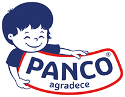
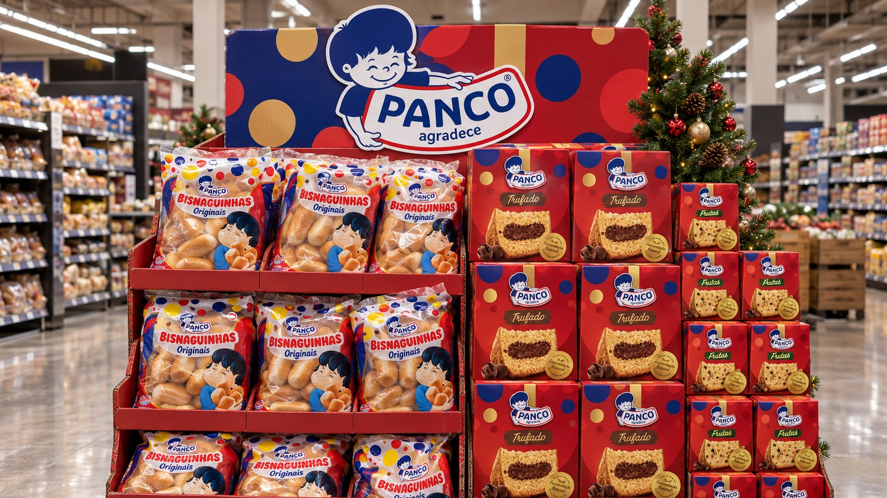
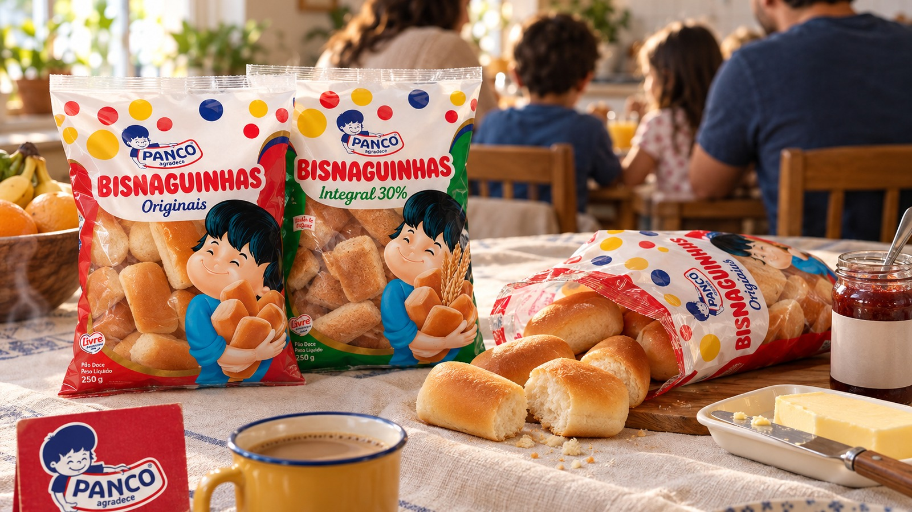
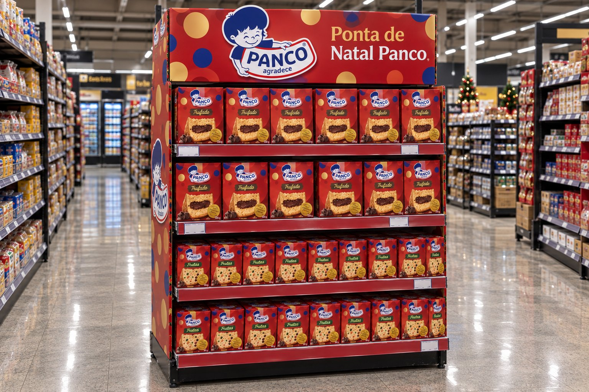
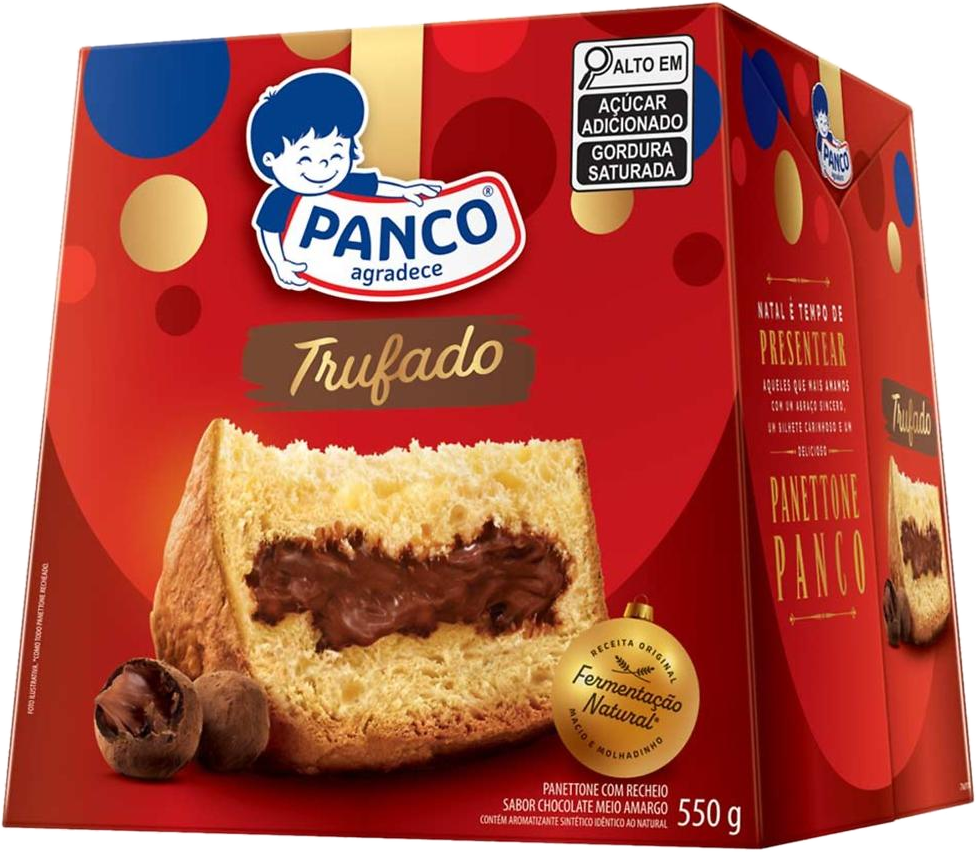
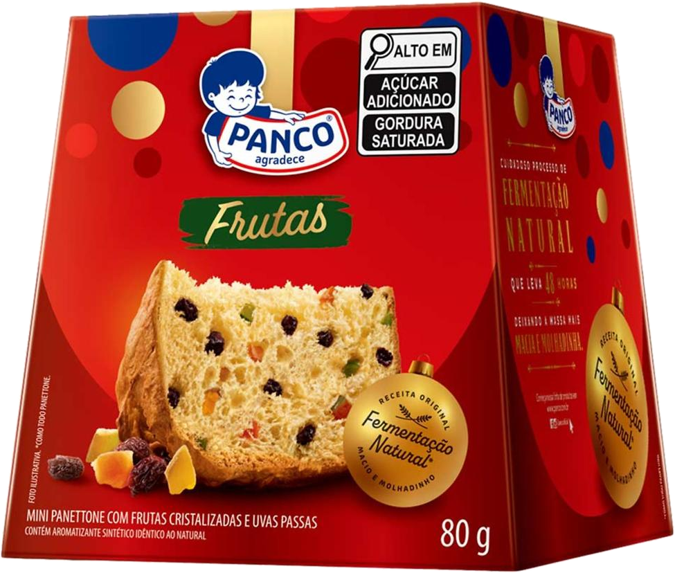
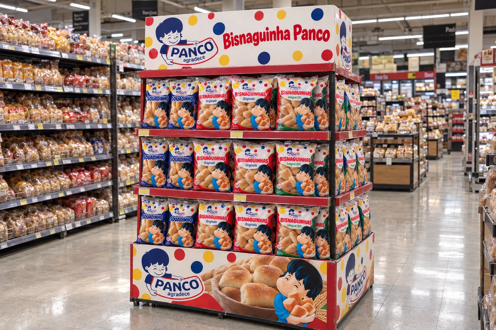
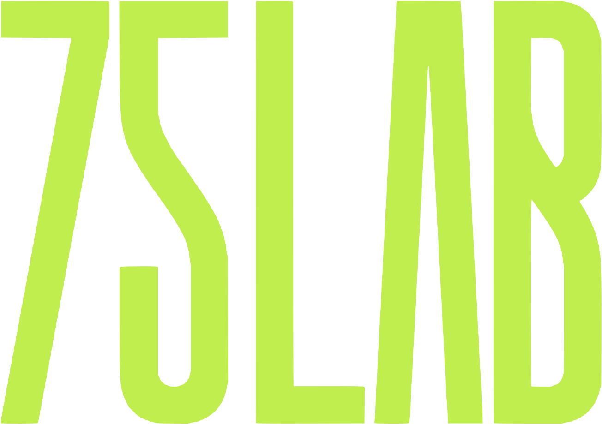

Em dezembro, todo mundo procura a Panco. Na loja, ela precisa ser encontrada.
Apresentação: Caique Becker, cofundador e Head de Trade da 75 LAB
Fonte: Google Trends, consulta de 10/10/2026. Imagem criada por IA a partir das embalagens reais; rótulos recriados, não são arte final.
Uma história em 5 passos: da gôndola concentrada ao Natal medido loja a loja.
Clique numa parada para ir ao capítulo.
O problema não é falta de material. É a Panco espalhada numa gôndola que ficou de um dono só.
“Precisamos de mais material de PDV.”
Ocasião e calendário, não só peça.
Pico de busca no Natal, ponta sem calendário.
O mesmo sistema contando a história de cada época.
Mais vendas que lojas de controle, ponta montada no prazo.
Condicionantes: prazo do Natal e preço Panco não confirmado. Riscos: produção atrasar e preço por quilo não competitivo.
Síntese 75 LAB; pedido da cliente de 14/09 (sistema visual único, comunicação trocável).
A categoria é grande e segue pesando na mesa.
O pão industrializado cresceu 6% em valor em 2025.
Fonte: Abimapi via Mercado & Consumo, 16/02/2026 (consulta 10/10/2026).
O shopper paga mais e leva menos: o pão e o panetone repetem o movimento.
Pão no 1º semestre de 2026: valor sobe 1,1%, volume cai 3,9%. Panetone 2025/26: valor sobe 3,5%, volume cai 3,4%.
Fontes: Abimapi/NielsenIQ via Mercado & Consumo, 25/08/2026; Worldpanel by Numerator para Abimapi via SuperVarejo, 27/08/2026.
Um só dono tem 60% do pão de forma no Sudeste.
A Bimbo comprou a Wickbold e a Seven Boys e soma Pullman, Plusvita e Ana Maria.
Fonte: relatora do caso no Cade, via InvestNews, 17/09/2025. Estimativa do Cade, não é dado de loja. Nutrella, que era da Bimbo, ficou fora do desenho: foi vendida por exigência do Cade (decisão de 18/09/2025; leilão em 24/07/2026, comprador em sigilo).
A Panco cobre mais ocasiões que qualquer rival. Ninguém junta pão do dia a dia e Natal como ela.
Fontes: Americanas online, 10/10/2026 18h52 (R$/kg da bisnaguinha); portfólio público das marcas (ocasiões cobertas: contagem 75 LAB). Seven Boys: preço sugerido, matéria não aberta (tracejado). Marcas próprias: Hipótese.
A marca própria cresce nas grandes redes. No supermercado regional, a marca ainda manda.
da marca própria está nos 10 maiores varejistas
é quanto a marca própria cresce mais que a indústria (mercado geral)
Hipótese: regional pesa menos
Fontes: NielsenIQ via Mercado & Consumo, 21/08/2026; NielsenIQ/Abmapro via Diário do Comércio. Regional como terreno da Panco: Hipótese 75 LAB.

O shopper não compra pão. Compra o café da manhã, o lanche e o Natal.
Fontes: SuperVarejo, 11/09/2025 (período nov/24 a jan/25); diagnóstico 75 LAB. Missões e barreiras: Hipótese de leitura.
O que cresce é a porção: o pequeno ganha espaço do grande.
de participação do bolo de 40 g no 1º semestre de 2026
de busca por “bolo pronto”: 13 últimas semanas contra as 13 primeiras
Busca não é venda: é sinal de interesse.
Fontes: Abimapi/NielsenIQ via Mercado & Consumo, 25/08/2026 (+4,2% como publicado pela fonte); Google Trends, consulta de 5 termos, 10/10/2026 (índice de busca, não é venda).
Seis tendências, uma direção: vender porção, ocasião e prova, não quilo.
Valor no lugar de volume
Disputar preço por quilo é perder margem: vender porção e sabor (mini 80 g, recheado).
O Natal começa no café da manhã
A Ponta de Natal Panco pode falar com o café da manhã de dezembro, perto do pão.
Minis e recheados puxam o Natal
Confirma a dupla: 550 g para a mesa, mini 80 g para o impulso. Diferenciar por sabor (Hipótese).
Marca própria nas grandes redes
No regional ela pesa menos (Hipótese): é onde a Panco vira referência.
Retail media virou verba de trade
A peça física pode ganhar camada paga (app, encarte digital, tela da rede), a conferir rede a rede.
PDV que se prova com dado
Cada metro extra tem de mostrar resultado: foto, prazo de montagem e sell-out por loja.
Passe o mouse (ou toque) para virar. Fontes: SuperVarejo 27/08/2026 e 11/09/2025; NielsenIQ 21/08/2026; IAB Brasil/Kantar IBOPE Media 29/04/2026.
Retail media já é verba de trade: R$ 4,8 bi em 2025.
A ponta física pode ganhar uma camada paga no app ou na tela da rede.
Hipótese No regional, a oferta de mídia precisa ser conferida rede a rede.
Fonte: Digital AdSpend, IAB Brasil com Kantar IBOPE Media, via Mercado & Consumo, 29/04/2026.
A Panco já é mais buscada que a Pullman em SP, RJ e PR, e dispara no Natal.
Média de 47 contra 33 da Pullman, com pico de 62 em 14/12/2025.
Fonte: Google Trends, consulta de 5 termos (pão de forma, bisnaguinha, bolo pronto, Panco, Pullman), Brasil e por estado, 05/10/2025 a 04/10/2026, consultada em 10/10/2026. Índice relativo: 100 é o pico do pão de forma na mesma consulta; não mede vendas. Barras: peso dentro de cada estado, compare só barras do mesmo estado. “Pullman” pode incluir buscas por pessoas com esse nome.
Ninguém precisa ganhar a gôndola inteira. Basta ganhar o momento em que o shopper decide.
Síntese 75 LAB.
Ganhar a loja por ocasião, porção e calendário.
O mesmo sistema de peças, contando a história certa em cada época.
Síntese 75 LAB; pedido de 14/09 (identidade fixa, comunicação trocável).
Sete oportunidades. Três começam já.
Ponta de Natal, Bisnaguinha e bolinho no caixa abrem o caminho.
Notas de impacto e esforço: julgamento 75 LAB, a validar com a Panco (Hipótese). Nutrella: marca que era da Bimbo e foi vendida por exigência do Cade (leilão em 24/07/2026; comprador em sigilo até a aprovação do Cade).

A ponta que já está em aprovação vira a Ponta de Natal Panco.
Panetone 550 g para a mesa, mini 80 g para o impulso, em supermercado regional de SP.
Na ponta, só panetone Panco. Imagem ilustrativa criada por IA a partir das embalagens reais (fotos de loja online de terceiro); rótulos recriados, não são arte final. Clique para ampliar.
O mini de 80 g é a porção que dá margem no Natal.
Por quilo, o mini custa de 3 a 4 vezes o panetone de 400 g.


Fontes: Drogaria São Paulo e Americanas online, 10/10/2026; Tenda Atacado (Trufado 550 g, R$ 33,90 online por CEP), 10/10/2026. A razão “3 a 4 vezes” e o R$/kg da Panco são contas 75 LAB. Preço oficial da Panco: a confirmar.
Estrutura fixa, comunicação trocável: a ponta vive o ano todo.
900 x 1.900 x 450 mm; a arte de Natal sai e entra a de café da manhã.
Medidas: card Panco no Ariuno (ponta em aprovação comercial). Divisões internas e camadas são ilustrativas; materiais e montagem: a definir com a produção.
A Bisnaguinha Panco ganha pelo valor por porção, na ilha do café da manhã.

Contra a Seven Boys, o argumento é quanto custa cada café, não cada pacote.
Preço Panco a confirmar antes de levar à rede
Fonte: Americanas online, 10/10/2026. Argumento de porção: Hipótese 75 LAB. Mockup criado por IA a partir das embalagens reais; planta ilustrativa, medidas a definir.
Uma peça, cinco ganhos conectados.
Síntese 75 LAB. Ganhos esperados, a medir no piloto.
Começar pequeno: lojas piloto contra lojas parecidas sem a ponta.
O piloto prova antes de escalar para a rede.
Hipótese Número de lojas: a definir com a Panco e a rede.
Análise 75 LAB. O desenho é esquemático, não mostra lojas reais.
Na montagem, cada ponta prova que existe, no lugar certo e no prazo.
Foto de execução, check de montagem e conformidade em uma visita.
com data e loja
conferida até 48 h depois da entrega (Hipótese)
posição, abastecimento, preço visível
loja e corredor certos
da implantação
pendência para corrigir
Prática da 75 LAB (Trade Visit e QR operacional já propostos nos decks de 06/10/2026). Janela de 48 h: Hipótese a validar com o fornecedor.
Durante o Natal, a ponta é acompanhada toda semana até sair da loja.
Visita recorrente, ruptura, abastecimento e sell-out por loja, com alerta.
Sensores e telemetria: opção a avaliar, não incluída nesta proposta.
Prática da 75 LAB. O sell-out por loja depende de dado da cliente ou da rede.
Três números dizem se a ponta funciona.
A linha de base sai do piloto; as metas ficam a definir com ela.
Panetone Panco com ponta x sem ponta
meta: a definir com a linha de base% de pontas montadas e conformes
meta: a definir com a linha de basepor visita, em cada loja
meta: a definir com a linha de baseBisnaguinha: preço por quilo Panco x Seven Boys na mesma loja.
Diagnóstico 75 LAB. Nenhuma meta foi inventada: valores reais só depois do piloto.
Para chegar à loja em novembro, a decisão precisa sair até 30/10.
Proposta 75 LAB; prazos de produção a confirmar com o fornecedor (Hipótese). Feriados nacionais: 12/10, 02/11 e 20/11. Natal: sexta, 25/12.
Três decisões nesta semana destravam o Natal.
Aprovar a arte de Natal sobre a ponta que já está em aprovação
Enviar a tabela de preço: panetone 550 g, mini 80 g e Bisnaguinha Panco
Escolher a rede regional e as lojas piloto
O que falta confirmar: preço de gôndola da Panco · prazo e fornecedor da produção · rede e número de lojas · bolinho individual e pão de hambúrguer no portfólio · dados da Abimapi conferidos no site da associação.
Cronograma e decisões: proposta 75 LAB, a alinhar com a Panco.
A Panco já é procurada. Agora ela vai ser encontrada.
Calendário: dezembro de 2026, com o pico de Natal (14/12 a 24/12). Imagem criada por IA.

Ideia boa é a que acontece.
Estratégia, design e produção para trade marketing, PDV e varejo.
Cofundador e Head de Trade · caique.becker@75lab.com.br
Telefone direto: [a preencher]
Dados institucionais 75 LAB, outubro de 2026.